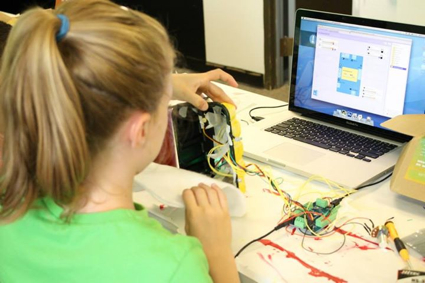
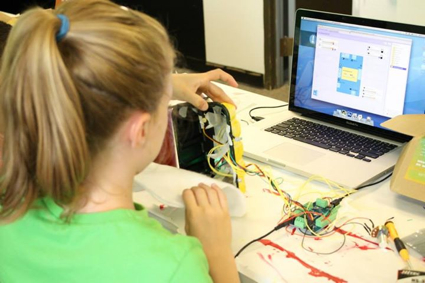

Located in Pittsburgh, Pennsylvania Pittsburgh Filmmakers Youth Media program provides comprehensive media literacy education to young people and adults through innovative classes, hands-on workshops, and outreach.
During my five years at Pittsburgh Filmmakers Youth Media I taught classes in video editing, filmmaking, stop-motion animation, video game design, and robotics. Though ages ranged from students as young as five to as old as eighty I found myself enjoying working with the 5-7 age range the best. Children of that age are incredibly creative and passionate, never have I heard one say "But that's impossible!"
Through Pittsburgh Filmmakers Youth Media, I had the rare opportunity to work with students in many different settings. Though most of my classes were held on-site during out-of-school hours, there were many school and community groups that would bring students to us on field trips. I also worked within both public and private school districts when they could not come to us or wanted their students to create a multi-media project that would span longer than one day.
Recycled Robots
Tired of the usual media class where students were simply sent home with a dvd of their work I designed Recycled Robots, a three day summer camp that merged the digital world with more traditional studio arts. Students learned important programming and robotic skills and vocabulary as they created their own unique robots. The week culminated in a Bot Show where students showed off their robots and explained what made them tick.
 

A demonstration of robots created by students in Recycled Robots camp for students ages 8 to 10. Working in pairs students created these unique creatures by collaborating and incorporating ideas and design elements from an exquisite corpse drawing they did earlier in the day. All robots were designed, created, and programmed by the students using recycled materials and the Hummingbird Robotics Kit.
Animation
I joined the Pittsburgh Filmmakers Youth Media team in 2009 as an assistant for animation classes and quickly worked my way up to a Teaching Artist. Throughout the years I have taught students how to stop-motion animate clay, objects, paper, Legos, and drawings, always teaching, "Animators Make the Impossible Possible!"